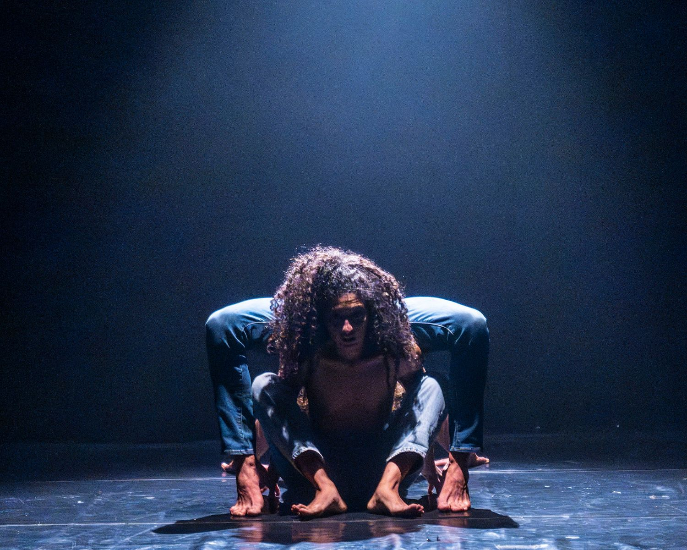
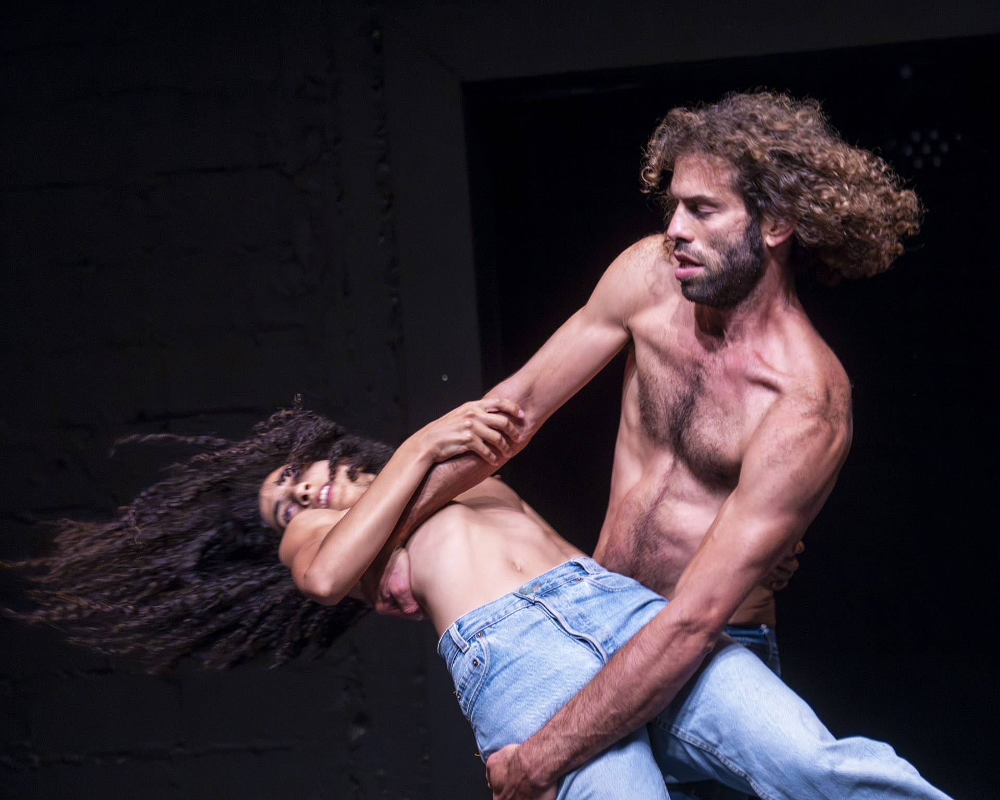
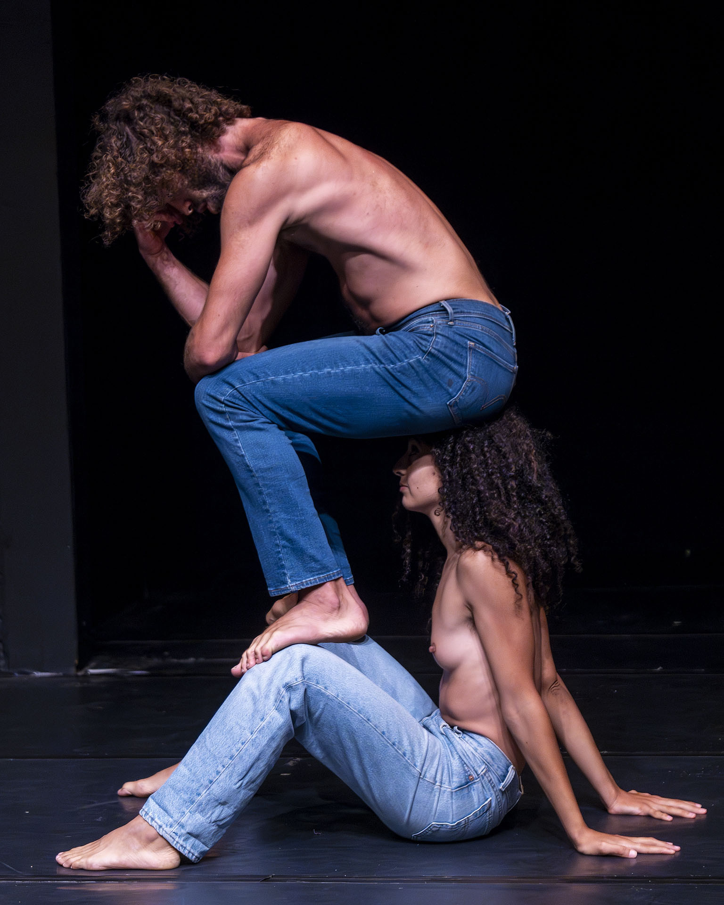
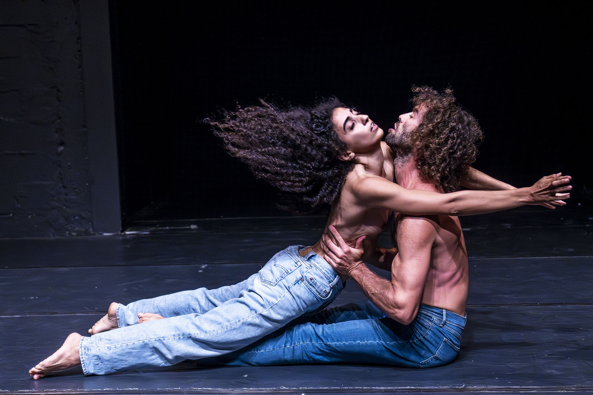
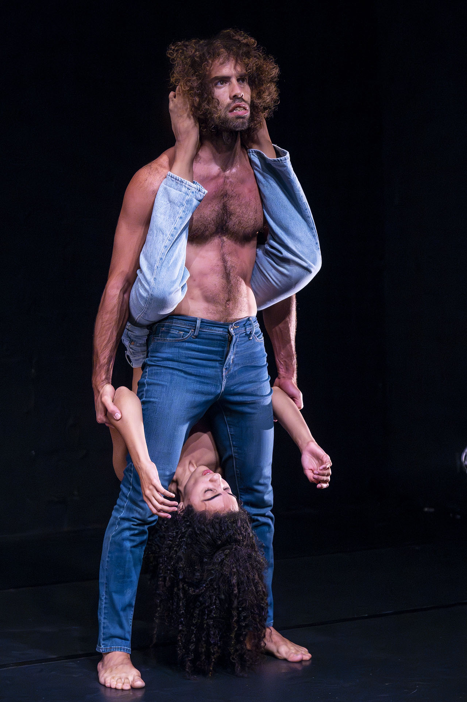

Stage · 2024
Woven
A duet about the dream of ideal love, and the tension between holding it and letting it go.

Teaser
A duet seeking to present the dream regarding ideal love and the gap between it and reality.
Gender-related dictates.
Fantasy and fairy tale stories as an existential need.
A salad of thoughts about love that has lost its taste, somehow returning life to the oppressive reality.
The duet is composed of partnering work dealing with the accumulation and release of tension arising from each individual's different needs. Exploring various ways to intensify the tension between us, searching for a rhythm where tension is maintained but in a way that remains tolerable and is released only a moment before the point of no return.
The shared need to maintain tension, the shared need to break it.
The work is rooted with iconic images that tell the difference between us — a gender difference, physical, essential, cultural. Exploring physical states where we lean on our differences, draw from them, use them for self-satisfaction. Is this at the expense of the other? When is it necessarily not? When is it necessarily yes? Investigating the extremes that exist in love — its dreamy side and its exploitative side, and the way both sides are embedded in the body. Exploring role mixing and observing how iconic images transform.
Stills




Credits
Concept & choreography
Talia Barda
Dancers
Nadav Sharon & Talia Barda
Premiere
Intimadance Festival, 2024 — Tmuna Theatre
Artistic guidance
Niv Sheinfeld & Oren Laor
Video recording
Daniel Pakes & Ophir Ben Shimon
Video editing
Nadav Alba Sharon
Light design
Matan Perminger
Photography
Oren Cohen & Dan Ben Ari